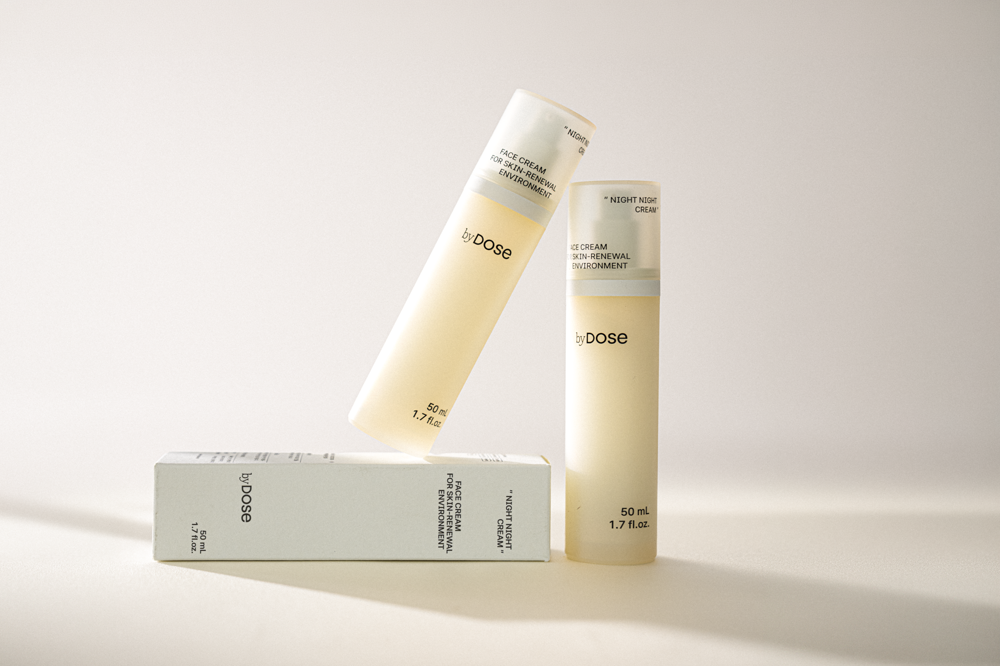
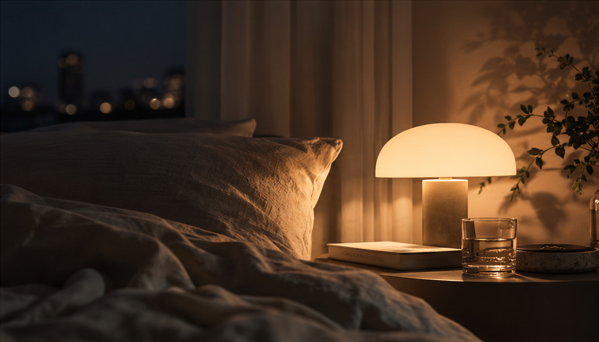
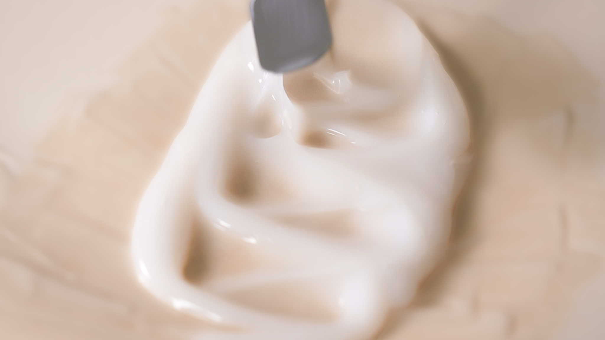
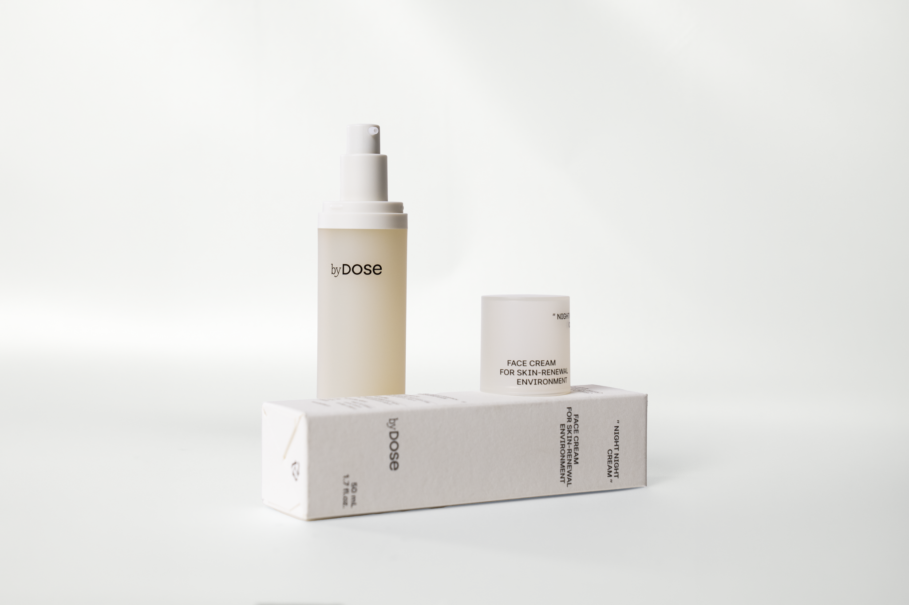

FOR A GOOD NIGHT
잠들기 전의 분위기
하루의 마지막 스킨케어가 편안한 밤에 어울리도록, 피부에 남는 감촉과 향까지 고려했습니다.
byDose
나잇나잇 크림 · 50 mL
나잇나잇 크림은 잠들기 전의 감각적인 경험부터 밤사이 피부가 스스로 회복할 수 있는 환경까지 고려해 설계한 나이트크림입니다.

LIGHT GEL-CREAM · AROMAWELLNESS SCENT · MOISTURE & BARRIER
가벼운 젤-크림 · AromaWellness 라인 조향 · 보습·장벽 케어
밤을 생각한 설계 살펴보기
피부는 밤에도 회복과 유지 활동을 이어갑니다. 그리고 수면은 건강한 피부를 위해 중요한 요소입니다. 바이도즈는 여기서 출발했습니다.
잠들기 전의 분위기와 피부가 밤을 보내는 환경을 함께 생각할 수는 없을까?
FOR A GOOD NIGHT
하루의 마지막 스킨케어가 편안한 밤에 어울리도록, 피부에 남는 감촉과 향까지 고려했습니다.
FOR GOOD SKIN
피부가 밤을 보내는 동안 수분을 공급하고 유지하도록, 보습과 장벽 케어를 설계했습니다.
시안용 생성 이미지
잠들기 전의 감각, 덧바를 수 없는 밤사이의 보습, 그리고 다음 날 아침의 피부 컨디션까지. 나잇나잇 크림은 이 흐름을 하나의 나이트케어로 생각했습니다.
11 PM
바르고 잠자리에 드는 순간의 감촉과 향
3 AM
다시 덧바를 수 없는 밤사이, 수분 공급과 유지에 집중
7 AM
촉촉하게 정돈된 아침 피부결까지 생각했습니다.
※ 11 PM · 3 AM · 7 AM은 밤의 사용 흐름을 표현한 상징적인 시간이며, 성분의 작용 시점을 의미하지 않습니다.
무거움은 덜고, 촉촉함은 남기도록.
나이트크림은 흔히 무겁고 리치한 제형을 떠올리기 쉽습니다. 하지만 촉촉함이 반드시 무거운 제형에서 오는 것은 아닙니다. 나잇나잇 크림은 수분감 있는 젤-크림 제형으로 부드럽게 펴 발리고, 번들거림을 줄인 산뜻한 마무리감을 지향합니다.

슬립 인 더포레스트
비 갠 숲속을 걷는 듯 촉촉하면서도 포근한 향. 라벤더 줄기를 손끝에 문지른 듯한 싱그러운 허브와 비에 젖은 흙내음, 이끼 낀 나무껍질의 분위기를 담았습니다.
| 향의 흐름 | 대표 노트 |
|---|---|
| TOP — 상쾌하게 시작 | 라벤더 · 라반딘 · 베르가못 · 자몽 |
| MIDDLE — 은은하게 연결 | 자스민 · 로즈마리 · 네롤리 |
| BASE — 깊고 차분하게 마무리 | 머스크 · 시더우드 · 베티버 · 패출리 |
나잇나잇 크림의 '슬립 인 더포레스트향'은 잠들기 전의 감각을 고려해 개발한, 바이도즈 독점 공급 향료로 완성했습니다.
향의 인상을 표현한 그래픽이며, 식물 원료의 실제 함유를 뜻하지 않습니다.
03. AROMAWELLNESS
향을 선택할 때는 좋은 냄새인지뿐 아니라, 그 향이 어떤 기분을 남기는지도 생각했습니다.
CPL Aromas의 AromaWellness는 향과 감정의 연결을 탐구하는 향 연구 플랫폼입니다.
향에 대한 사람의 행동과 생리적 반응, 주관적 인식을 다양한 평가 방법으로 살펴봅니다.
AromaWellness 플랫폼의 대표 평가 방법
※ AromaWellness 플랫폼의 대표 평가 방법입니다. 나잇나잇 크림의 향료에 포함된 Relaxation 향료는 강조한 두 방법으로 평가되었으며, 표 전체가 나잇나잇 크림의 시험 항목을 뜻하지는 않습니다.
밤사이 피부가 회복하는 데 중요한 수분을 채우고 지키는 성분을 조합했습니다. 여기에 아침 피부결과 컨디션까지 고려한 두 가지 발효 성분을 더했습니다.
수분, 피부 회복의 시작점
수분 공급과 보습막을 고려한 설계
물 분자를 끌어당기는 히알루론산은 대표적인 보습 성분입니다. 기본 형태부터 잘게 분해된 형태, 그물처럼 연결된 형태까지 서로 다른 구조의 히알루론산 5종을 조합했습니다. 각기 다른 특성의 히알루론산이 피부에 수분을 공급하고, 피부 표면에 촉촉한 보습막을 형성하도록 고려했습니다.
수분 이동과 저장 환경까지 고려한 설계
자일리톨·자일리틸글루코사이드·무수자일리톨로 구성된 보습 복합체 AQUAXYL™을 사용했습니다. AQUAXYL™은 표피 내 수분 이동과 수분 저장을 돕는 특성을 지닌 보습 원료입니다. 히알루론산이 물 분자를 끌어당겨 붙잡는다면, AQUAXYL™은 피부 안에서 수분이 오가고 유지되는 환경에 주목한 성분입니다.
함께 배합한 이유
나잇나잇 크림은 수분을 채우는 데서 그치지 않고, 수분이 고르게 오가고 머무는 환경까지 고려하기 위해 두 원료를 함께 배합했습니다.
※ AQUAXYL™의 특성은 원료사 자료 기준이며, 나잇나잇 크림 완제품의 시험 결과가 아닙니다.
채운 수분을 지키는 이중 보호 설계
수분 환경의 안정화와 보호에 주목
높은 염도와 건조함 등 극한 환경에 서식하는 일부 미생물이 스스로를 보호하기 위해 만들어내는 물질입니다. 엑토인은 주변의 물 분자와 상호작용해 단백질과 세포막 주변의 수분 환경을 안정화하는 특성을 지니고 있습니다. 이러한 특성을 바탕으로 피부의 수분 유지와 장벽 보호를 위한 성분으로 활용되며, 엑토인을 함유한 제형의 피부 적용 연구*에서도 보습 및 수분 손실 개선 가능성이 보고되었습니다. 나잇나잇 크림은 단순히 수분을 공급하는 것을 넘어, 건조함과 외부 환경 스트레스까지 고려한 보습 설계를 위해 엑토인을 선택했습니다.
* 원료·제형 연구 기준이며, 나잇나잇 크림 완제품의 시험 결과가 아닙니다.
피부 장벽의 지질 보완에 주목
세라마이드는 피부 각질층에서 세포 사이를 채우는 주요 지질 성분 중 하나입니다. 5종 세라마이드를 조합해 피부 장벽에 필요한 지질을 보완하고, 수분 손실을 줄이는 장벽 케어를 고려했습니다.
함께 배합한 이유
엑토인이 수분 환경의 안정화와 보호에 주목한 성분이라면, 세라마이드는 피부 장벽을 구성하는 지질에 집중한 성분입니다. 서로 다른 역할의 두 성분을 함께 배합해, 채운 수분을 지키기 위한 보습 환경을 생각했습니다.
아침 피부결까지 생각한 발효 케어
수분 유지와 피부 컨디셔닝
비피다균의 발효 과정에서 얻은 여과물입니다. 발효 과정에서 얻는 수용성 성분을 담은 원료로, 피부의 수분 유지와 컨디셔닝을 위해 활용됩니다. 나잇나잇 크림은 이러한 원료 특성에 주목해, 하루 동안 외부 환경에 노출된 피부의 컨디션까지 고려하여 비피다발효여과물을 선택했습니다.
보습과 부드러운 피부결 관리
갈락토미세스의 발효 과정에서 얻은 여과물입니다. 피부 보습과 피부결 관리를 위한 컨디셔닝 원료로 활용되며, 관련 원료를 함유한 제형 연구에서는 피부 거칠기 개선이 보고되었습니다. 나잇나잇 크림은 이러한 원료의 활용 배경을 바탕으로, 건조함으로 거칠어지기 쉬운 피부를 촉촉하고 부드럽게 관리하는 나이트케어를 위해 갈락토미세스발효여과물을 선택했습니다.
함께 배합한 이유
수분을 채우고 지키는 보습·장벽 설계에 두 가지 발효 성분의 컨디셔닝 특성을 더해, 다음 날 아침의 피부결과 컨디션까지 생각했습니다.
※ 발효 성분의 특성과 연구 배경에 대한 설명입니다. 연구에 사용된 원료·제형의 결과를 나잇나잇 크림 완제품의 시험 결과로 제시하지 않습니다.

| 항목 | 내용 |
|---|---|
| 제품명 | byDose NIGHT NIGHT CREAM (나잇나잇 크림) |
| 용량 | 50 mL |
| 제품 유형 / 제형 | 나이트 크림 / 젤-크림 타입 |
| 피부 타입 (공식 분류) | 모든 피부용 |
| 용기 | 에어리스 펌프 |
| 사용법 | 스킨케어 마지막 단계에서 적당량을 얼굴 전체에 부드럽게 펴 바릅니다. |
| 제조국 | 대한민국 |
| 소비자가 | 28,900원 |
| 공식 홈페이지 / 문의 | bydose.kr / hogan@bydose.kr |
전성분·제조/책임판매 정보·박스 입수 등 상세 정보와 공급가·MOQ·납기는 필요 시 별도 자료로 제공합니다.
제품 검토와 비즈니스 문의
hogan@bydose.kr